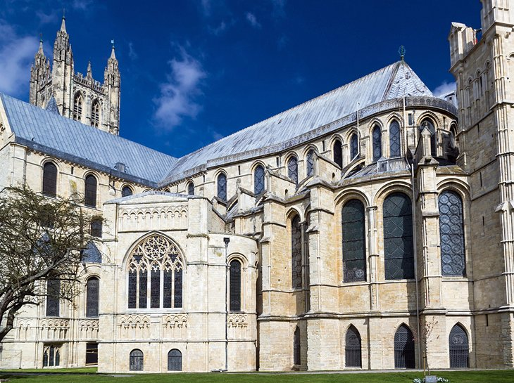
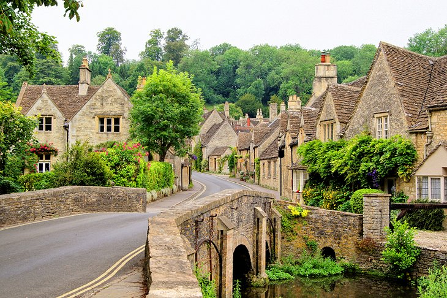
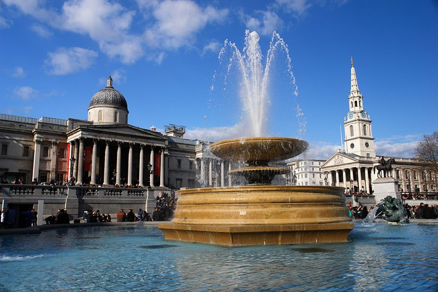
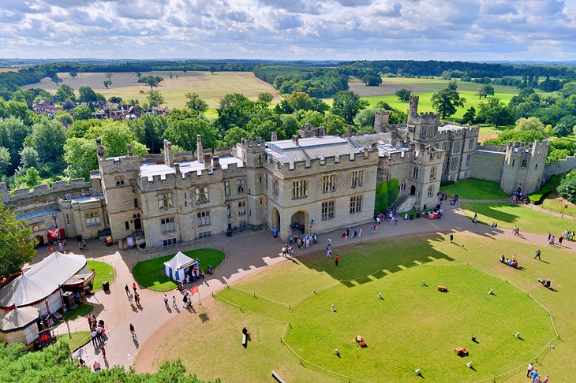
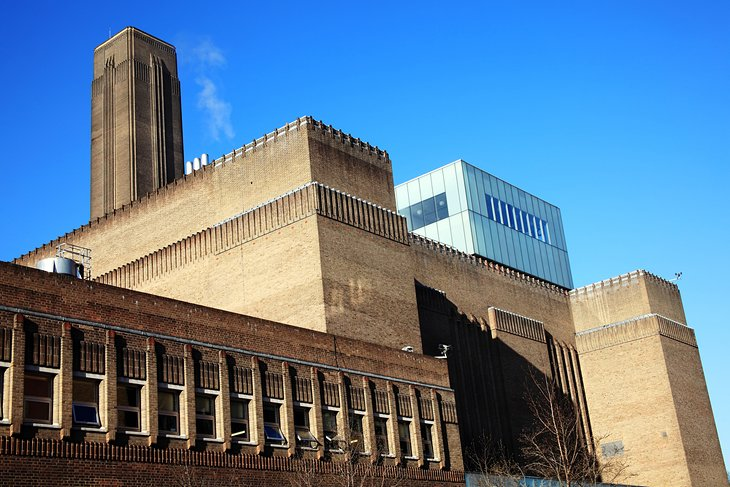
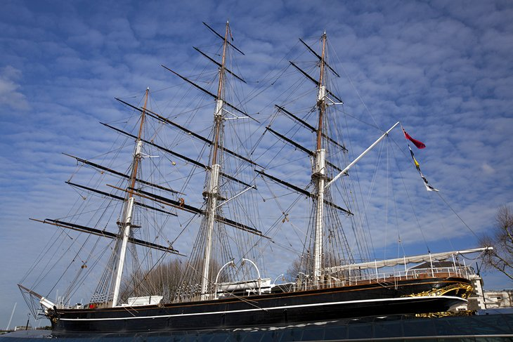

One of the most visited countries in the world, England offers almost endless possibilities for things to see and do. Part of the beautiful British Isles, this small but influential country bursts with fascinating history, exciting cities, and rich cultural traditions. Historic sites are at every turn, from prehistoric megaliths and ancient Roman sites to centuries-old castles and town centers dating back to the Middle Ages.
England is also extremely easy to get around, with its most popular tourist destinations well connected by trains and buses. Or you can drive between points of interest on a well-planned system of motorways. Whether you choose to tour the country by car or public transport, you're guaranteed an unforgettable experience.
1) Stonehenge. Stonehenge, 10 miles north of Salisbury on Salisbury Plain, is Europe's best-known prehistoric monument (the site is so popular that visitors need to purchase a timed ticket in advance to guarantee entry). Exhibitions at the excellent visitor center set the stage for a visit, explaining through audio-visual experiences and more than 250 ancient objects how the megaliths were erected and telling about life when they were placed here, between 3000 and 1500 BC. After walking around the enormous stones, visit the authentic replicas of Neolithic Houses to see the tools and implements of everyday Neolithic life as volunteers demonstrate skills from 4,500 years ago. Although you can't go inside the circle to wander among the stones during normal opening hours, you can reserve special early morning or late evening access into the circle through English Heritage, which manages the site.

2) Prison, palace, treasure vault, observatory, and menagerie - the Tower of London has done it all. Widely considered the most important building in England, there's enough to see and do at this World Heritage Site to keep visitors busy for hours. The centerpiece is the White Tower. Built in 1078 by William the Conqueror, it's home to amazing exhibits such as Line of Kings, the world's oldest visitor attraction (1652) with its remarkable displays of royal armor. Other highlights include the wonderful Crown Jewels exhibition, classic Yeoman Warder Tours, the Royal Mint, and exhibits and displays regarding prisoners and executions. All told, the Tower of London covers some 18 acres, so there's a great deal of exploring to do.

3) The Roman Baths and Georgian City of Bath. If you only have time to visit one smaller city in England, you couldn't do much better than Bath. This remarkably beautiful city boasts more fantastic tourist attractions than you could hope to visit in a day. While most famous for the magnificent 2,000-year-old Roman Baths built around the city's rejuvenating hot springs, it's equally well known for its honey-colored Georgian Townhouses such as those located on Royal Crescent. Some 500 of the city's buildings are considered of historical or architectural importance, a fact that has resulted in the entire city being granted World Heritage status. Bath makes an ideal location from which to explore some of England's most stunning countryside, including the Avon Valley, the Mendip Hills, and countless other fantastic Somerset landmarks.

4) British Museum.With collections of antiquities that are among the world's finest, the British Museum holds more than 13 million artifacts from Assyria, Babylonia, Egypt, Greece, the Roman Empire, China, and Europe. The most famous ancient artifacts are the Elgin Marbles from the Parthenon in Athens and the Rosetta Stone, but there are many other outstanding pieces on show here. The Ancient Egyptian collection is the largest outside of Cairo, and the hoard of Roman silver dating from the fourth century known as the Mildenhall Treasure, unearthed in Suffolk in 1942, is nothing short of spectacular.

5) York Minster and Historic Yorkshire.The magnificent York Minster is second in importance in the Church of England only to the cathedral at Canterbury. It stands in the center of York, surrounded by half-timbered homes and shops, medieval guildhalls, and churches. In turn, York's romantic streets are surrounded by three miles of magnificent town walls that you can walk atop for views of the city and its surroundings. While there, visit the National Railway Museum, one of England's most visited tourist attractions. York is a good base for exploring the countryside, in particular the rugged beauty of the Yorkshire Dales and the North York Moors. Elsewhere in Yorkshire, you'll find some of England's most beautiful historic towns and cities, including Durham and Beverley.

6) Chester Zoo.Located in Upton, just over a mile north of Chester city center, Chester Zoo is England's most visited attraction outside of London and a particular favorite for families. The more than 11,000 animals living in this 125-acre site represent about 400 different species. But the zoo's appeal reaches to more than animal lovers, with prizewinning landscaped gardens. You can tour these extensive grounds on the zoo's monorail system to reach highlights that include Chimpanzee Island, a penguin pool, and Europe's largest tropical house.
While in Chester, take time to walk its walls, the best preserved of their kind in Britain, and see Chester's other most distinctive feature: its galleried walkways running the length of stone and half-timbered buildings dating from the 14th century.

7) Lake District National Park.Covering some 900 square miles, the Lake District National Park is a must-visit destination for travelers to England. With 12 of the country's largest lakes and more than 2,000 miles of rights of way waiting to be explored, there's little wonder the region continues to inspire, with its magnificent views and scenery straight out of a painting. Other things to do include visiting the park's many fells, including Scafell Pike (3,210 feet), the highest mountain in England; lovely little towns and villages such as Grasmere; as well as boat excursions across Lake Windermere and Ullswater.

8) Canterbury Cathedral. Located in the heart of the historic city that bears its name, Canterbury Cathedral (a UNESCO World Heritage Site) is home to the Archbishop of Canterbury and is the cradle of English Christianity. It all started when St. Augustine converted the pagan Anglo Saxons here in 597 when he became the first bishop. But there's much more to this beautiful medieval city than its cathedral. Canterbury is also a popular cultural and entertainment destination with great shopping, galleries, and cafés, as well as attractions such as those focused on Chaucer's medieval England and the city's Roman past.
9) Eden Project.The incredible Eden Project is a collection of unique artificial biomes containing an amazing collection of plants from around the world. Located in a reclaimed quarry in Cornwall, the complex consists of huge domes that look rather like massive igloo-shaped greenhouses. Each houses thousands of different plant species in tropical and Mediterranean environments. As well as these stunning displays of plant life, the Eden Project hosts numerous fantastic arts and music events.

10) The Cotswolds.The Cotswolds cover some 787 square miles and encompass parts of some of England's prettiest counties - Gloucestershire, Oxfordshire, Wiltshire, Somerset, Worcestershire, and Warwickshire. And all of it begs to be explored. Designated an Area of Outstanding Natural Beauty due to its rare limestone grassland habitats and old growth beech woodlands, the beauty of the Cotswolds has much to do with its quaint villages and towns, such as Castle Combe, Chipping Norton, and Tetbury. Like so much of England, the Cotswolds is perfect to discover on foot, particularly along the Cotswold Way, a 10-mile footpath with spectacular views of the Severn Valley and the Vale of Evesham.

11) National Gallery Displaying, one of the most comprehensive collections of paintings in the world, the National Gallery is London's second-most visited museum. The collections, which present an almost complete cross-section of European painting from 1260 until 1920, are especially strong in the Dutch Masters and the Italian Schools of the 15th and 16th centuries. In the Italian galleries look for works by Fra Angelico, Giotto, Bellini, Botticelli, Correggio, Titian, Tintoretto, and Veronese, and especially for Leonardo da Vinci's Madonna and Child with St. Anne and John the Baptist, Raphael's The Crucifixion and The Entombment by Michelangelo.
In the German and Dutch galleries are works of Dürer, van Dyck, Frans Hals, Vermeer, and Rembrandt, and among the artists from the 18th century through 1920, Hogarth, Reynolds, Sargent, Gainsborough, Constable, and Turner are standouts. French works include those by Ingres, Delacroix, Daumier, Monet (including The Water-Lily Pond), Manet, Degas, Renoir, and Cezanne.

12) Warwick Castle
.If you're looking for a truly memorable English family excursion - one that offers a fascinating insight into life in medieval times - you couldn't do much better than visit Warwick Castle. Located in the beautiful city of Warwick on the River Avon, this impressive fortress has dominated the landscape and history of the region for more than 900 years. Today, it serves as a backdrop to medieval-themed events and reenactments, from jousting festivals to fairs and concerts. Warwick is a great base from which to explore the Cotswolds, as well as nearby cities such as Stratford-upon-Avon, Liverpool, and Manchester, all just an easy drive away.

13) Tate Modern. When the Tate Modern opened its new 10-storey extension in June 2016, adding 60 percent more gallery space, visitor numbers jumped by almost one-fourth, making it one of England's most visited attractions.
Among the world's largest museums of modern and contemporary art, the Tate Modern shows a wide range of artistic expression, including paintings, works on paper, sculpture, films, performances, installations, and other forms of artistic expression. Among the well-known artists represented here are Picasso, Rothko, Dali, Matisse, and Modigliani. Be sure to go to the viewing level for 360-degree views of the London skyline and the River Thames far below.

14) Royal Museums Greenwich. Downstream from Tower Bridge, Greenwich is the London base of the Royal Navy and holds England's largest expanses of preserved historic architecture and parks. And although lovers of things maritime will certainly gravitate to Greenwich, there's a lot more there than ships and boats. The highlight for most visitors is the Cutty Sark, the last surviving of the 19th-century clippers from the lucrative tea trade between Britain and China. Built in 1869, the Cutty Sark was one of the finest and fastest ships of its day, and you can board it to explore the clipper, from its figure head to the sailors' quarters below decks.
At the Discover Greenwich Visitor Centre exhibits show more than 500 years of maritime history. In Queen's House, the National Maritime Museum is the largest of its kind in the world, featuring the Royal Navy from Tudor times to the Napoleonic Wars. Greenwich Park, dating from the 15th century and the oldest of London's eight Royal Parks, is filled with beautiful gardens and walking paths, and here you'll find the Old Royal Observatory and the Prime Meridian Line, marked by a steel rod in the floor of the Meridian Building. This is the zero meridian of longitude, dividing the world into eastern and western halves; you can stand with one foot in each hemisphere.